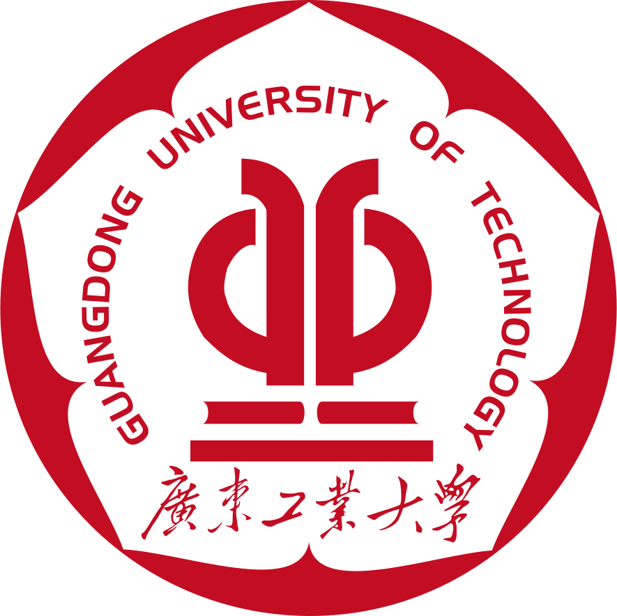

💾 数字 IC / FPGA / SoC · 集成电路工程硕士
从 RTL 到流片，定义架构、驱动算力落地
南京航空航天大学 · 天元实验室（国家重点实验室）
三项国家级课题驱动，主导 ASIC 前端全流程与 FPGA 系统架构设计；
从 RTL 实现到时序收敛，在真实工程约束中持续打磨技艺。
3
🔬 国家级课题
9+
🏅 竞赛奖项
5年+
⚙️ 工程经验
数字 IC 前端设计
FPGA 设计
芯片验证
教育背景
硕士在读 · 2024 年 9 月 — 2027 年 6 月（预计）
 南京航空航天大学
南京航空航天大学
电子信息工程学院 · 电子信息（集成电路设计方向）
学士 · 2020 年 9 月 — 2024 年 6 月
广东工业大学
集成电路设计联合学院 · 电子科学与技术（IC 班）
研究方向
数字 IC 前端设计 / FPGA 系统架构
AI 推理硬件加速 / 低功耗高能效计算